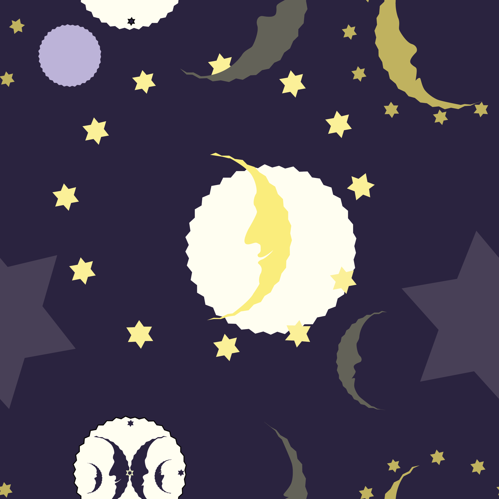

2D Artwork
Pattern Play: Night Sky
Night sky is a pattern created using Adobe Illustrator. It is a seamless pattern square, that creates a constant pattern. This artwork was a step outside of my comfort zone, as rather I had to take a more asymetric approach, rather than try making everything symmetrical and perfect. It was brought to my attention how I tend to stick to certain color palettes and symmetry, so it only felt right to explore a new theme/aesthetic, and color palette for this piece.